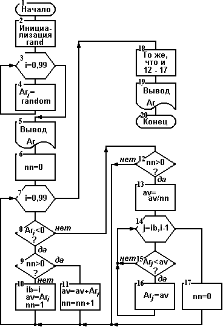

| Каталог | Индекс раздела |
| Назад | Оглавление | Вперед |
Целью лабораторной работы является получение практических навыков в работе с массивами в языке C.
Объявить массив целых чисел и заполнить его случайными значениями. Размер массива и диапазон значений его элементов заданы в Вашем варианте индивидуального задания. В индивидуальных заданиях указано также, какую обработку массива следует произвести.
Для всех вариантов задания следует иметь в виду следующее:
| 1 | 2 | 3 | 4 | 5 | 6 | 7 | 8 | 9 | 10 |
| 11 | 12 | 13 | 14 | 15 | 16 | 17 | 18 | 19 | 20 |
| 21 | 22 | 23 | 24 | 25 | 26 | 27 | 28 | 29 | 30 |
Схема алгоритма показана на рисунке ниже.

В первой фазе выполнения программы нам необходимо будет сформировать массив случайных чисел. Перед тем как мы будем обращаться к датчику случайных чисел, необходимо его проинициализировать (блок 2). Далее организуем цикл со счетчиком (блок 3), в каждой итерации которого генерируется следующее случайное число и записывается в следующий элемент массива (блок 4). После окончания цикла заполнения массива выводим массив на экран (блок 5).
Нам необходимо будет вычислять среднее значение последовательности, следовательно - подсчитывать количество элементов в ней. Для этого мы вводим переменную nn - счетчик элементов, нулевое значение этой переменной будет показывать, что у нас нет последовательности для обработки. В начале обработки мы устанавливаем nn=0 (блок 6).
Далее организуем цикл со счетчиком (блок 7), в котором перебираем элементы массива. Для каждого элемента в первую очередь проверяется его знак (блок 8). Если это отрицательный элемент, то это может быть первый или не первый элемент последовательности. Это можно определить, проверяя значение переменной nn: если она 0 - это первый элемент (блок 9). Для первого элемента мы запоминаем в переменной ib индекс начала последовательности, устанавливаем счетчик элементов nn в 1, а в переменную av записываем значение этого элемента (блок 10). Для не первого элемента мы увеличиваем счетчик на 1, а значение элемента суммируем со занчением переменной av (блок 11). Таким образом, переменная av у нас играет роль накопителя суммы элементов последовательности.
Если же очередной элемент последовательности положительный, то возникает вопрос - не является ли этот элемент первым положительным элементом после отрицательной последовательности? Это можно проверить по счетчику nn. Если элемент первый, то значение nn должно быть больше 0 (блок 12). Если нет, то нам необходимо обработать ту отрицательную последовательность, которая только что закончилась. Для обработки мы в первую очередь получаем среднее значение (блок 13). Потом организуем цикл (блок 14) со счетчиком j, который изменяется от ib (индекс начала отрицательной последовательности, который мы сохранили раньше) до i-1 (i - это индекс первого положительного элемента после отрицательной - это индекс первого положительного элемента после отрицательной последовательности, следовательно i-1 - индекс последнего элемента отрицательной последовательности). В каждой итерации этого цикла мы сравниваем j-й элемент массива со средним значением av (блок 15). Если значение элемента меньше среднего (т.е. больше по абсолютному значению), то среднее значение записывается в j-й элемент (блок 16), если же нет - ничего не происходит. По выходу из цикла мы устанавливаем счетчик nn в 0 (блок 17), как признак того, что у нас нет необработанной последовательности. Для не первого положительного элемента нет необходимости что-либо делать.
После выхода из того цикла, который начался в блоке 7, необходимо проверить, не осталась ли у нас необработанная последовательность и, если да, обработать ее. На схеме алгоритма мы показали это одним блоком 18, действия, которые выполняются в этом блоке тождественны действиям, которые детально показаны в блоках 12 - 17.
По окончанию обработки мы выводим массив-результат (блок 19) и заканчиваем программу.
Для реализации алгоритма нам будут необходимы следующие переменные.
Массив целых чисел, который будет обрабатываться:
int Ar[100];
Массив должен располагаться в статической памяти.
Индексы элементов массива для внешнего (блоки 3 - 17) и внутреннего (блоки 14 - 16) циклов:
int i, j;
Переменные, в которых будут храниться параметры очередной последовательности: сумма элементов, а потом среднее значение - av, количество элементов в последовательности - nn, индекс начала последовательности - ib:
int av;
int nn;
int ib;
Отметим, что для большинства данных, которые представляются переменными программы, достаточно было бы и типа short или char, т.к. их значения укладываются в диапазон: -128 - 128. Мы выбираем тип int согласно с общим стилем программирования на языке C. Отдельного рассмотрения требует переменная av, т.к. в ней накапливается сумма, а значит, ее значение может значительно превысить значения остальных переменных. Но в наихудшем случае (когда все элементы массива будут иметь максимальные значения) ее значение не превысит 100*50=5000, следовательно типа int достаточно и для нее.
В начале текста программы включаем в него файлы, содержащие описания тех функций, к каким мы будем обращаться:
#include <stdio.h>
#include <time.h>
#include <stdlib.h>
В файле stdio.h описания функций стандартного ввода-вывода, в файле stdlib.h - функции генерации случайных чисел. В описании функции randomize() мы нашли примечание, что она является макросом, который обращается к функции time(), следовательно, перед файлом stdlib.h в программу должен быть включен файл time.h.
Мы обусловили, что массив должен размещаться в статической памяти. Если мы объявим массив до открытия тела главной функции, то он будет размещен именно в статической памяти. Поэтому далее у нас идет объявление массива.
int Ar[100];
Далее ставим заголовок главной функции main и открываем ее тело:
int main(void){
Главная функция начинается с объявления остальных переменных программы см. п.5.2.
Кодовая часть программы начинается с обращения к функции инициализации датчика случайных чисел (блок 2):
randomize(100);
Далее организуем простой цикл со счетчиком (блок 3), в каждой итерации которого в следующий элемент массива записывается случайное число (блок 4). Обращение к функции rand() возвращает нам число в пределах 0 - 100; вычитая из него 50, мы приводим его к диапазону -50 - +50.
for (i=0; i<100; Ar[i++]=random(101)-50 );
Заполненный таким образом массив в цикле выводим на экран (блок 5). Формат вывода каждого элемента - %3d - обеспечивает отображение числа из двух цифр со знаком. Между числами задаеv еще два пробела, таким образом, каждый элемент занимает 5 позиций, а в одной строке экрана разместится целое число (16) элементов, что обеспечит удобное представление массива.
printf("Начальный массив:\n");
for (i=0; i<100; printf("%3d ",Ar[i++]));
putchar('\n');
putchar('\n');
Далее идет заголовок цикла перебора массива (блок 7), в котором мы также присваиваем начальное значение счетчику nn (блок 6):
for (nn=i=0; i<100; i++) {
Все тело цикла состоит из одного условного оператора. В этом операторе проверяем (блок 8) знак i-го элемента массива:
if (Ar[i]<0)
Если это условие - истина, то проверяем, не равен ли 0 счетчик элементов последовательности nn (блок 9):
if (!nn)
При выполнении этого условия выполняется ряд действий (блок 10), которые мы берем в операторные скобки:
{ ib=i; av=Ar[i]; nn=1; }
Если же условие ложно, то выполняется сложный оператор (блок 11):
else { av+=Ar[i]; nn++; }
Если же элемент положительный, то выполняется часть else первого условного оператора, в которой анализируется nn - нет ли у нас необработанной отрицательной последовательности (блок 12):
else if (nn) {
Если есть необработанная последовательность, выполняем усреднение значения av (блок 13):
av/=nn;
и организуем цикл с параметром j, который изменяется от ib до i-1(блок 14):
for (j=ib; j<i; j++)
В каждой итерации этого цикла j-й элемент массива сравнивается с средним значением (блок 15) и, если он больше, заменяется на среднее значение (блок 16). Это реализуется одним условным оператором:
if (Ar[j]<av) Ar[j]=av;
При выходе из цикла записываем 0 в счетчик nn (блок 17):
nn=0;
На этом заканчивается и внешний цикл.
Несколько операторов, которые следуют после выхода из цикла (блок 18), обеспечивают обработку последней последовательности и в основном являются копией тех операторов, которые реализуют блоки 12 - 17. Разница состоит в том, что тут мы внесли усреднение в начальное действие цикла и убрали присваивание nn=0, т.к. значение nn нам больше не понадобится.
Операторы вывода массива-результата - копия вывода начального массива.
Полный текст программы приведен ниже.
/***************************************************/
/* Лабораторная работа ╧8 */
/* Работа с массивами */
/* Пример решения. Вариант ╧30. */
/***************************************************/
#include <stdio.h>
#include <time.h>
#include <stdlib.h>
int Ar[100]; /* массив, который обрабатывается */
int main(void) {
int i, j; /* индексы в массиве */
int av; /* среднее значение */
int nn; /* количество эл-тов в последовательности */
int ib; /* индекс начала последовательности */
randomize(); /* инициализация rand */
/* заполнение массива случайными числами */
for (i=0; i<100; Ar[i++]=random(101)-50 );
/* вывод начального массива */
printf("Начальный массив:\n");
for (i=0; i<100; printf("%3d ",Ar[i++]));
putchar('\n');
putchar('\n');
for (nn=i=0; i<100; i++) { /* перебор массива */
if (Ar[i]<0)
/* обработка отрицательного элемента */
if (!nn) {
/* начало последовательности */
/* запомнить индекс начала,
начальное значение накопителя суммы
и счетчика элементов */
ib=i; av=Ar[i]; nn=1;
}
else {
/* накопление суммы,
подсчет количества */
av+=Ar[i]; nn++;
}
/* конец обработки отрицательного элемента */
else /* обработка положительного элемента */
if (nn) {
/* если есть необработанная
отрицательная последовательность */
av/=nn; /* усреднение */
/* перебор всей последовательности
с ограничением */
for (j=ib; j<i; j++)
if (Ar[j]>av) Ar[j]=av;
nn=0; /* последовательность обработана */
} /* конец если есть необработанная... */
} /* конец перебор массива */
if (nn) /* если не обработана последняя
отрицательная последовательность */
for (av/=nn, j=ib; j<i; j++)
if (Ar[j]>av) Ar[j]=av;
/* вывод результатов */
printf("Массив-результат:\n");
for (i=0; i<100; printf("%3d ",Ar[i++]));
putchar('\n');
return 0;
}
Отладка программы включает в себя в первую очередь проверку результатов, которые выдает программа. Размер массива и значения элементов таковы, что не составит труда проверить преобразования нескольких последовательностей, выполняя вычисления вручную или при помощи калькулятора.
Если же обнаруживаются ошибки в результатах, то можно использовать пошаговый метод отладки, при этом следует проверять работу алгоритма отдельно по ветвям: 7 - 8 - 9 - 10; 7 - 8 - 9 - 11; 7 - 8 - 12 - 13 - 14 - 15 - 16 - 17. При пошаговой отладке следует отслеживать в первую очередь значения тех переменных, которые отвечают за преобразование - ib, nn, av.
Отдельно следует проверять работу программы для случаев, когда массив начинается отрицательной последовательностью и когда массив заканчивается отрицательной последовательностью.
Образец результатов программы приведен ниже
Начальный массив: 22 15 45 -15 -19 19 -38 34 -39 37 -3 -25 33 -11 -27 -45 47 29 5 -14 17 -40 -34 -8 46 -29 40 0 17 9 38 17 42 -47 -27 9 1 30 -33 -4 -50 27 -10 1 41 24 -7 -41 35 35 41 12 37 -49 16 29 49 -11 -15 35 -39 43 3 19 -20 21 -45 -3 13 -12 3 -13 12 -11 34 -5 -14 -35 -13 -50 -2 48 47 -4 45 46 -13 -29 45 -12 -45 -2 21 -33 -42 -2 13 27 -24 -42 Массив-результат: 22 15 45 -15 -17 19 -38 34 -39 37 -3 -14 33 -11 -27 -27 47 29 5 -14 17 -27 -27 -8 46 -29 40 0 17 9 38 17 42 -37 -27 9 1 30 -29 -4 -29 27 -10 1 41 24 -7 -24 35 35 41 12 37 -49 16 29 49 -11 -13 35 -39 43 3 19 -20 21 -24 -3 13 -12 3 -13 12 -11 34 -5 -14 -19 -13 -19 -2 48 47 -4 45 46 -13 -21 45 -12 -19 -2 21 -25 -25 -2 13 27 -24 -42
При выполнении лабораторной работы рассмотрены вопросы
| Каталог | Индекс раздела |
| Назад | Оглавление | Вперед |